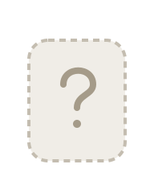

MY COMPANION ✦

카페몽
Lv. 1카페에서 태어난 고양이형 몽글몬
♡ 우리의 첫 만남
체력
마나
경험치
◒ 포만감 ♡ 행복
잠깐 쉬어 가요
카페몽과 초원의 시간이 멈췄어요.

카페에서 태어난 고양이형 몽글몬
카페몽과 초원의 시간이 멈췄어요.
코어를 초원으로 끌어 놓으면 던전이 열려요.
끌어 놓거나, 코어를 선택한 뒤
초원의 원하는 위치를 눌러 주세요.
다른 성격, 같은 모험.
함께하는 동료 1 / 6 · 카드를 눌러 자세히 보기
최대 6명의 동료와 동시에 함께할 수 있어요.
화면의 동료를 선택하면 그 동료를 돌보고 지시해요.
몬스터가 남긴 아이템을 차곡차곡 모아요.
보관 중인 아이템이 없어요.
던전을 열고 몬스터를 사냥해 보세요.
드롭된 아이템은 자동으로 창고에 들어와요.
아이템을 누르면 설명과 획득처를 볼 수 있어요.
같은 아이템은 수량이 합쳐져 자동 저장돼요.
작은 관심이 동료에게는 큰 힘이 돼요.
작은 순간도 소중한 기억이 되니까.